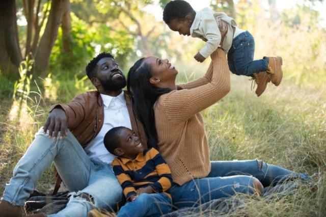
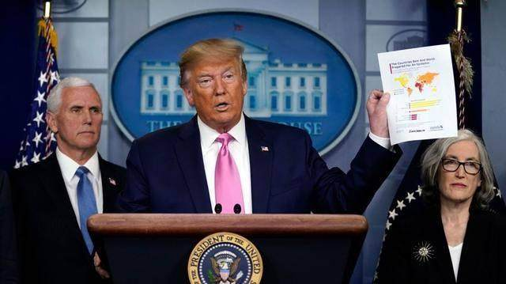

数说疫情0306：湖北非武汉地区首次零新增，美国感染数可能被低估
原文链接 备份链接 境外累计确诊病例即将超过2万。美国很可能有上千例潜在感染病例以及他们的密切接触者未能被及时发现和隔离，到目前为止，“我们看到的美国官方病例数字可能只是冰山一角”。 文 |《财经》数据研究员徐进 图 |《财经》 …
体坛周报全媒体记者 季孟年
出生于1983年的后卫球员普尔·杰特已经在CBA效力多年，本赛季他是福建男篮的一员。就像其他的外援们一样，杰特在新冠疫情爆发之后选择回到了美国。如今，中国的疫情已经得到了有效的控制，CBA也即将重燃战火。不久之前，杰特已经回到了中国，如今正在接受隔离观察。
杰特表示，过去的这几个礼拜让他感觉无比漫长，新冠疫情给他的生活带来了极大的影响。在回到中国之后，他接受了媒体的专访，谈到了这几个礼拜他的见闻与感悟。
以下是杰特第一人称口述：
疫情打乱杰特假期计划

1月21日，我打完了CBA停赛之前的最后一战。当时，团队当中已经开始给我们发口罩，并且告诉我们可能爆发了疫情。不过那时候，还没有多少人在意究竟发生了什么。
比赛之后的第二天，我便离开了晋江前往广州，开启了春节假期。其后，我们全家坐着飞机到了曼谷。在那里，我们逐渐意识到新冠疫情似乎的确很严重。我开始询问我的团队：“这究竟是怎么一回事？”
紧接着在1月24日，我的教练告诉我要在1月24日回到球队一趟，有一个会议要参加。当时我说，我正和我的家人在泰国度假。但他却表示，让我信任他，回到球队当中开会。
当我从曼谷重新回到中国的时候，我发现一切都和前几天完全不同而来。民众已经开始居家进行隔离，很多店铺都关了门，我们就连吃饭的地方都找不到。那个时候我意识到，是时候带着我的妻子返回美国了。
球队同样也建议我尽快离开中国，他们给我预定了1月28日的航班。我们先从厦门出发，抵达了江苏省，然后从那里转机回到了美国。球队的工作人员有些不好意思的说，预定的航班已经没有商务舱了。不过我丝毫不在意，“我只想现在就回家去。”我当时这样说道。
飞机着陆的时候，我送了一口气，但还是觉得感觉很奇怪。毕竟，我还从没有在一月底回过美国。
马布里的建议改变杰特想法

在我回到美国之后，我开始和更多人讨论这件事情。比如说保罗，我对他说：“兄弟，你要开始多关注一些有关新冠病毒的事情。”我让保罗和阿里扎在他的球鞋上，写上了为武汉祈福的相关字眼。但在那个时候，疫情还没有蔓延到欧洲，我们似乎也没有觉得它有那么严重。
很多人还会问我，为什么会在这个时候就回来。我回答道：“因为新冠疫情，CBA停摆了，甚至我们都不知道什么时候赛季才能回归。”
我告诉很多人，NBA在中国有非常多狂热的球迷，因此大家最好为中国祈福。那个时候，了解疫情的人实在是太少。但现在，疫情已经席卷了美国的所有地方，他们或许终于理解了为什么我在那个时候要回到美国。
渐渐地，我从我的队友和其他朋友们那里听到了很多好消息，我知道中国的疫情控制进行得非常好，CBA也计划在四月份重新开始。
但与此同时，美国的疫情越来越严重，我将家人带回到了洛杉矶，然后开始思考下一步应该怎么办。
起初在考虑是不是回到中国的时候，我还有些疑虑。直到后来与马布里联系之后，我问他现在在哪里，他说自己在中国，这才坚定了我回到中国的决心。
我订了从洛杉矶到台北再到上海的航班，但我对家人还是有些不舍。我的妻子对我说：“你应该回去，你有合同在身，我会照顾好家里的。”最终，我踏上了回到中国的航班。
隔离生活并没有那么可怕

洛杉矶很空，就像是一座鬼城。但是，飞机上人却很多，大家似乎都在想着逃离这座城市。
到了上海之后，我发现这里的工作人员们都身穿着防护服，我填写了一张又一张的健康证明。他们会给每一个入境者贴一些贴纸，有红色、黄色和绿色。绿色和黄色都代表着你的身体状态足够健康，我就得到了一张黄色贴纸。
当我离开机场，坐上汽车前往被隔离的酒店时，我从没有见过这样的阵势。驾驶员坐在前面，用一张类似塑料膜的东西把我和他隔离开。在他们看来，安全才是重中之重。
进入旅馆之后，我开始了为期两周的隔离。很显然，我并不能离开房间。每天，会有人进来为我测量两次体温，并且提供餐食。此外，还会有人时不时来询问一下我的情况，问一问我的感觉如何。
说实话，这个过程一点也不可怕，还是非常人性化的。我被照顾得很好，福建队还留了一些零食给我。
无聊的时候，我会跟我的家人们视频聊天，他们都有些担心我，但其实我真的非常好。这样的状态跟我平时也差不多，来中国八年了，我一直也没有什么娱乐活动，就是待在酒店里或者是体育里，或者就是找个什么地方吃吃饭。说起来，就像是我已经被隔离了8年。
美国抗疫应该学习中国经验

能够再度参加比赛，那一定会让我很兴奋。我了解中国，一旦他们做了决定，这个决定便一定是正确的。据我了解，比赛会空场进行，球迷们不能前来助威。但那也只是比赛的一部分，我只希望比赛能够顺利的进行。
当然，这个赛制也比较特殊，会被集中安排在两座城市进行，分别是青岛和东莞。每支球队每周需要打四场比赛，这样一来常规赛很快就会结束。或许在五月份的某个时段，属于我的这个赛季就结束了，我也将再度回到家人旁边。
自从CBA停赛以来，我并没有停下训练，我保持自己的身材保持得很不错。不过现在被隔离着，我却没办法训练，我只能做做俯卧撑，来保持一定的训练强度。我希望隔离酒店可以给我一台健身车或者跑步机，虽然不做什么太大的期望。但我感觉，他们会满足我的要求。
我所知道的是，我的队友劳森、康宁汉姆也即将回来，广东队的威姆斯更是在一个多星期之前便已经回到了中国，他的隔离期应该已经结束了。
如今，我非常期待赛季的重启。此外，我还觉得中国在此次抗击疫情当中，有很多做得好的地方需要美国去学习。他们一直都在进行着隔离，你能想象很多中国人一个月都没有离开家吗，这就是中国抗疫成功的关键。我觉得美国和世界上其他地方的人们，也必须多关注中国的抗疫做法。
在美国的人们应该更好的照顾自己，比如用热水洗手，比如带上口罩且每隔四个小时更换一次。最重要的是，除了必要的购物之外，尽可能待在家里。这是我认真思考之后得出的几点经验，希望未来几天我能听到一些好消息从美国传来，更希望大家都能照顾好自己，就这样。
原文链接 备份链接 境外累计确诊病例即将超过2万。美国很可能有上千例潜在感染病例以及他们的密切接触者未能被及时发现和隔离，到目前为止，“我们看到的美国官方病例数字可能只是冰山一角”。 文 |《财经》数据研究员徐进 图 |《财经》 …
原文链接 备份链接 *************▲*************春天来了，学校门前的路却空空荡荡。 （沉白白/图） 全文共4034字，阅读大约需要7分钟。 威尼托大区本周关闭了学校，却没有要求大家在家隔离。看着窗外三三两两去踢 …
原文链接 备份链接 3月19日晚，央视《新闻1+1》连线中国红十字会志愿专家团队专家马学军。马学军介绍说，在伊朗有一个叫做“网络登记报告”的系统。“据了解，伊朗已经排查了2250万人，其中至少150万人有发热症状。也就是说，现在的伊朗疫 …
原文链接 备份链接 图片来源：视觉中国 记者：崔璞玉 “ 根据该计划，政府将向个人发放最多达1200美元的现金，针对夫妻的发放额为2400美元，每个孩子的现金额为500美元。 ” 美东时间3月19日，参议院多数党领袖米奇·麦康奈 …
原文链接 备份链接 新冠疫情的蝴蝶效应，到底是怎么一步步发酵，最后形成了当前这场威力惊人的龙卷风？ 点击图片，一键下单 「*全球经济 熔断时刻*」 主笔 | 谢九 3月9日，美国股市暴跌熔断之后，“股神”巴菲特表示，自己活了89岁也没 …